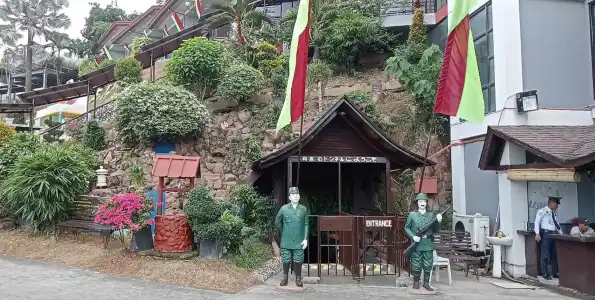
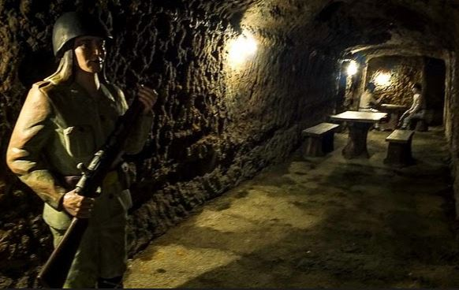

Davao Tourist Destinations
Davao City Davao City is a vibrant gateway to Southern Mindanao, known for its rich cultural heritage, natural wonders, and warm hospitality. As one of the largest cities in the Philippines, it offers travelers a diverse mix of experiences—from the lush greenery of Mount Apo, the country’s highest peak, to the pristine beaches of Samal Island just a short boat ride away. Visitors can immerse themselves in local traditions at the Kadayawan Festival, explore wildlife sanctuaries like the Philippine Eagle Center, and discover historical sites such as the Japanese Tunnel. With its blend of adventure, relaxation, and cultural depth, Davao stands out as a must-visit destination for both local and international tourists.
Top Destinations to Explore in Davao
Davao City offers a mix of urban experiences, natural wonders, and cultural landmarks, making it a top destination for tourists. Here’s a guide to the must-visit destinations in Davao.
1. Eden Nature Park and Resort
- Location: Toril, Davao City (approximately 1 hour from downtown)
- Highlights: Scenic gardens, hiking trails, sky rides, and organic farms.
- Why a Car Rental is Ideal:
- Located in the highlands, it’s best accessed with a 4×4 SUV like the Toyota Fortuner for comfort and ease on uphill roads.
- Flexible scheduling allows visitors to enjoy outdoor activities at their own pace.

2. Philippine Eagle Center
- Location: Malagos, Baguio District (around 45 minutes from downtown)
- Highlights: Home to the endangered Philippine eagle and other wildlife species.
- Why a Car Rental is Ideal:
- Travel directly to this nature sanctuary without waiting for public transportation.
- Families can benefit from spacious MPVs like the Toyota Innova 2022 to carry extra gear or picnic supplies.

3. Malagos Garden Resort
- Location: Calinan District (approximately 45 minutes from downtown)
- Highlights: Chocolate museum, bird shows, and nature-inspired activities.
- Why a Car Rental is Ideal:
- Traveling with kids or groups is more enjoyable with a van like the Toyota HiAce Commuter for extra seating and comfort.
- Visitors can plan a full-day trip and take home Davao’s famous Malagos Chocolate.

4. People’s Park
- Location: Downtown Davao City
- Highlights: Sculptures, playgrounds, and lush landscapes.
- Why a Car Rental is Ideal:
- TParking options nearby make it convenient to stop by while exploring other downtown attractions.
- Sedans like the Toyota Vios are perfect for quick urban trips.

5. Crocodile Park and Zoo
- Location: Maa, Davao City (around 20 minutes from downtown)
- Highlights: Exotic animals, crocodile breeding, and wildlife encounters.
- Why a Car Rental is Ideal:
- Families with kids will appreciate the convenience of a Multi-Purpose Vehicle (MPV) to store bags and snacks for the trip.
- Flexibility to combine this stop with nearby attractions.

6. Magsaysay Park
- Location: Magsaysay, Sta Ana ave. Davao City (around 20 minutes from downtown)
- Highlights: Fruits, Tribal Village ,local delicacies, and a relaxing park atmosphere.


7. Japanese Tunnel
- Location: Diversion Road, Matina, Davao City,
- Highlights: Historic World War II tunnel, museum, and cultural exhibits.



7. Museo Dabawenyo / National Museo Dabawenyo
- Location: Pichon Street, Davao City,
- Highlights: Cultural Exibits, historical artifacts, and local heritage displays.
- The Davao Japanese Tunnel is a World War II landmark in Matina, Davao City, offering visitors a mix of historical exploration and resort-style amenities. It features guided tours through preserved underground passages, wartime dioramas, and artifacts, alongside a restaurant and swimming pool.


7. San Pedro Cathedral
- Location: San Pedro Street, Barangay 2-A, Poblacion District, Davao City
- San Pedro Cathedral, also known as the Metropolitan Cathedral of San Pedro, is the oldest church in Davao City and the seat of the Archdiocese of Davao. It is both a religious center and a cultural landmark, notable for its ark-shaped modern design and deep historical significance.

9. Samal Island (via Sasa Wharf)
- Location: Accessible via ferry from Davao City (10–15 minutes)
- Highlights: White sand beaches, resorts, and snorkeling activities.
- Why a Car Rental is Ideal:
- Cars can be ferried to Samal Island, allowing visitors to explore beach resorts and waterfalls at their own pace.
- SUVs and pickups like the Mitsubishi Strada are suitable for transporting beach gear and outdoor equipment.

Exploring Davao City and its nearby attractions is best done with a Davao Tour Car Rental, as it offers flexibility, comfort, and accessibility to remote or less crowded destinations. Whether you’re heading to the beaches of Samal Island, trekking Mount Apo, or enjoying family-friendly parks, there’s a rental vehicle suited to your needs—be it a spacious SUV, durable pickup, or budget-friendly sedan. Renting a car ensures you experience the best of Davao without limits.